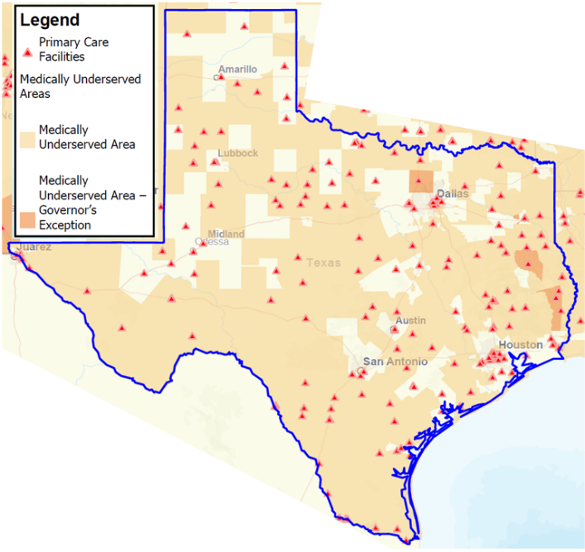

Telehealth
Telehealth has been used successfully for other aspects of newborn care. Telehealth strategies to overcome geographic disparities or workforce issues have been successful for other neonatal diseases. For example, telemedicine evaluation of infants with cleft lip and palate who are born in rural nurseries is relatively cost-effective and prevents unnecessary interhospital transfers.30 Similarly, telehealth can be used to screen infants for retinopathy of prematurity or congenital heart disease, support newborn resuscitation efforts, and provide perinatal care.31-35 However, telehealth has not been used to address the critical disparities in antimicrobial use among infants born in rural or medically underserved nurseries.
Distance-based antibiotic stewardship programs can be effective for low-resource settings and address the two major barriers to ASP implementation in these settings. Numerous studies have demonstrated that telestewardship can improve the quality of care delivery for adult and pediatric patients admitted to hospitals that do not have in-house ASP support.36-38 Stenehjem and colleagues39 demonstrated the effectiveness of a combined on-site and telehealth-supported stewardship program for rural hospitals in Utah. In 2017, the Infectious Diseases Society of America published a policy statement supporting the use of distance-based strategies for ASP support.40 Telehealth may be particularly beneficial in Texas, which has on average 30% fewer primary care physicians per capita than the national average.41 Of 254 Texas counties, 211 (83%) are designated by the Health Resources and Services Administration (HRSA) as medically underserved (Figure 2) and 33 counties (13%) have no primary care physicians at all.
